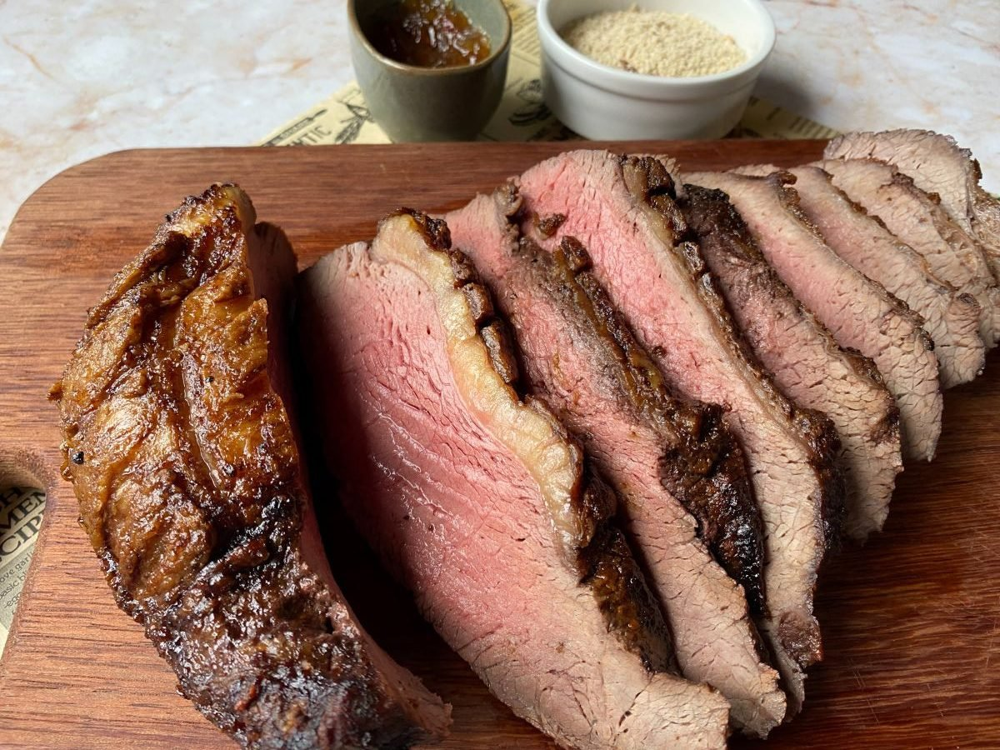
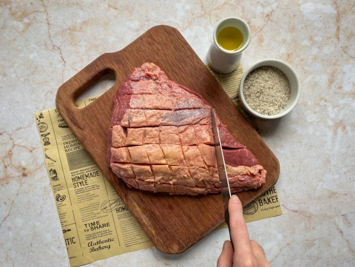
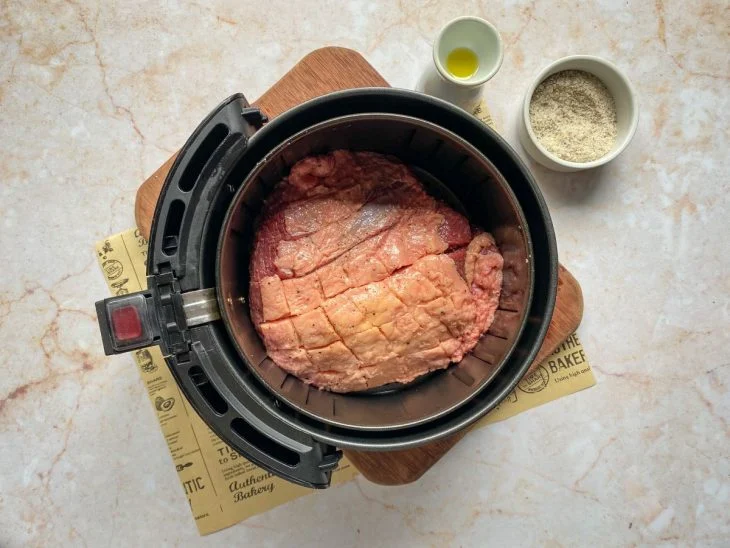
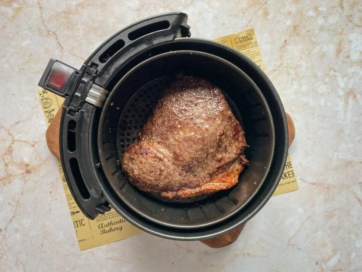
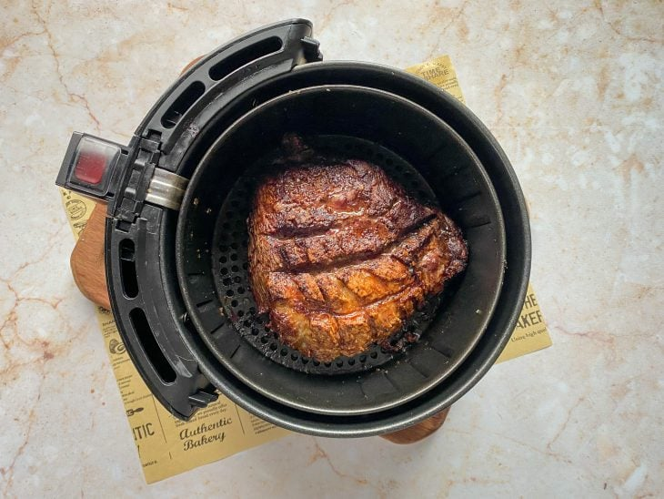
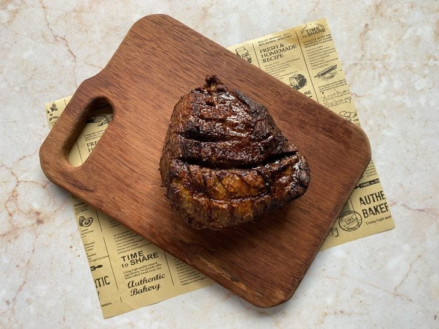

Picanha inteira na airfryer

Ingredientes
- 1,1 kg de picanha
- 1 colher de sopa de azeite (ou a gosto)
- 1 colher de chá de sal de parrilha (ou a gosto)
Modo de preparo

Reúna os ingredientes para fazer uma picanha inteira na airfryer, um clássico de preparo diferenciado;- 
Em uma tábua, faça cortes de cerca de 1 cm somente no couro da panceta. Evite cortar até a carne para manter a suculência da carne;
- 
Para temperar, passe o azeite e o sal em ambos os lados. Espalhe com as mãos por toda a superfície da carne. Coloque a picanha com a gordura virada para cima no cesto da airfryer. Ligue-a a 200ºC por cerca de 15 minutos;
- 
Após a primeira rodada, abra a airfryer com cuidado e vire a peça para o outro lado. Diminua a temperatura para 180ºC e asse por aproximadamente 15 a 20 minutos;
- 
Abra o cesto novamente após a segunda rodada, vire a picanha com a gordura para cima novamente e deixe na mesma temperatura por mais 15 a 20 minutos;
- 
Sirva essa deliciosa picanha com farofa e molho de sua preferência. Bom apetite!